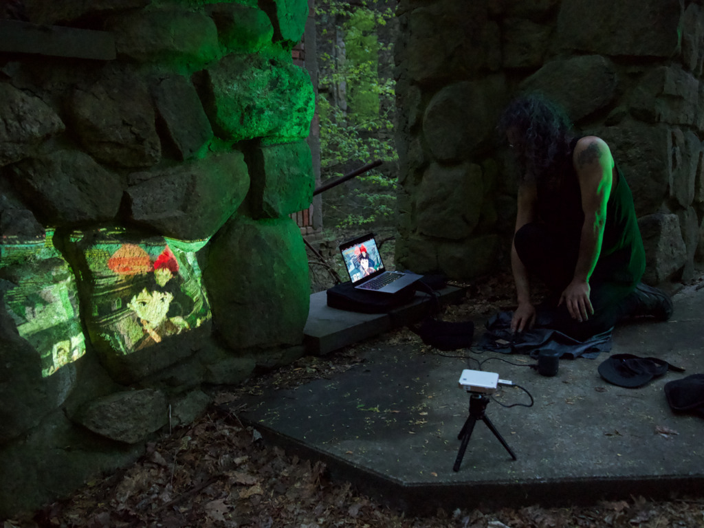
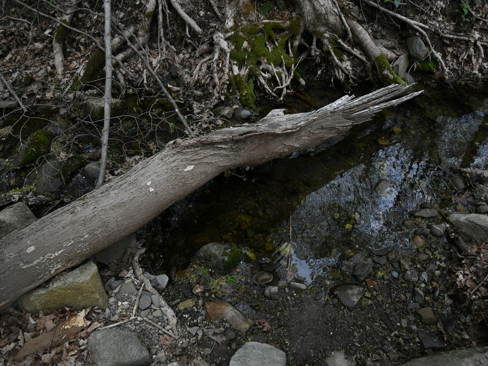
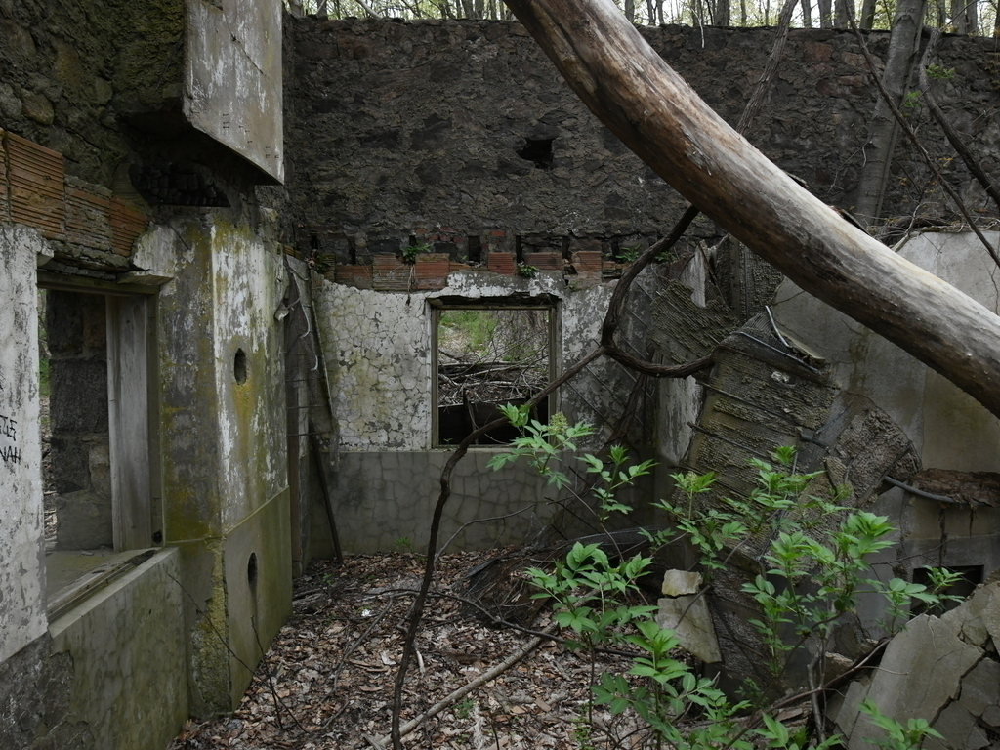
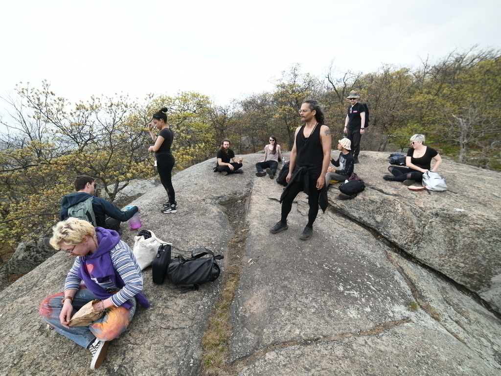
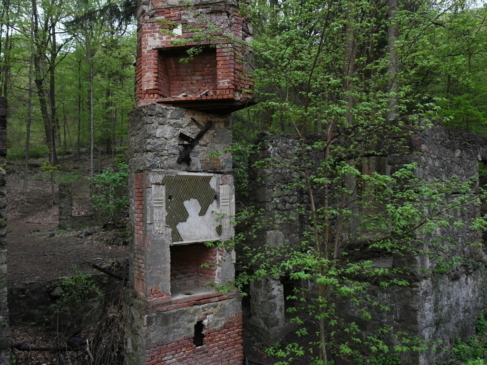
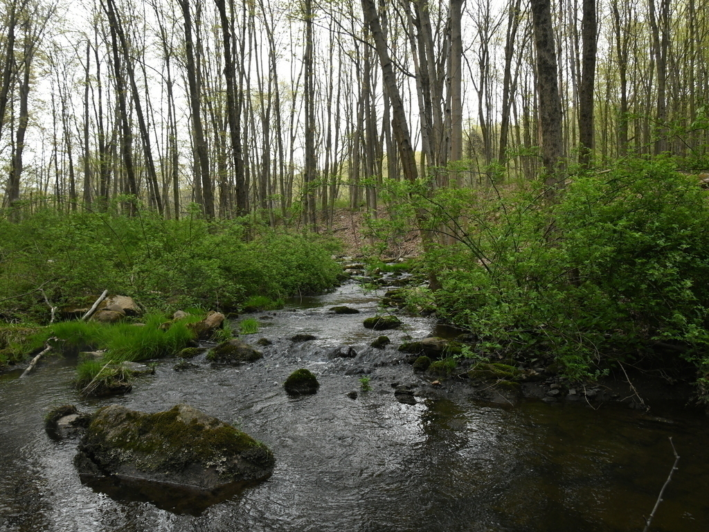
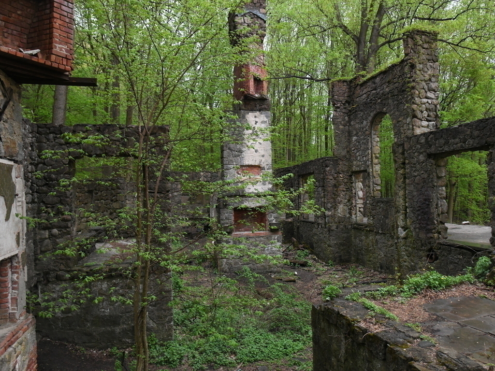
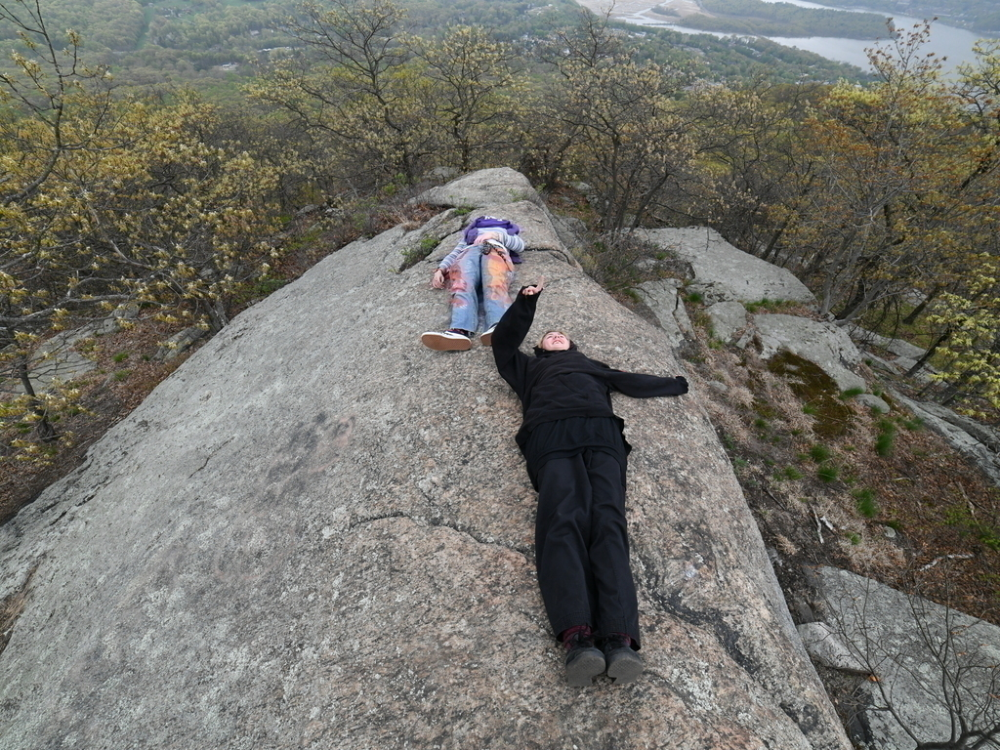
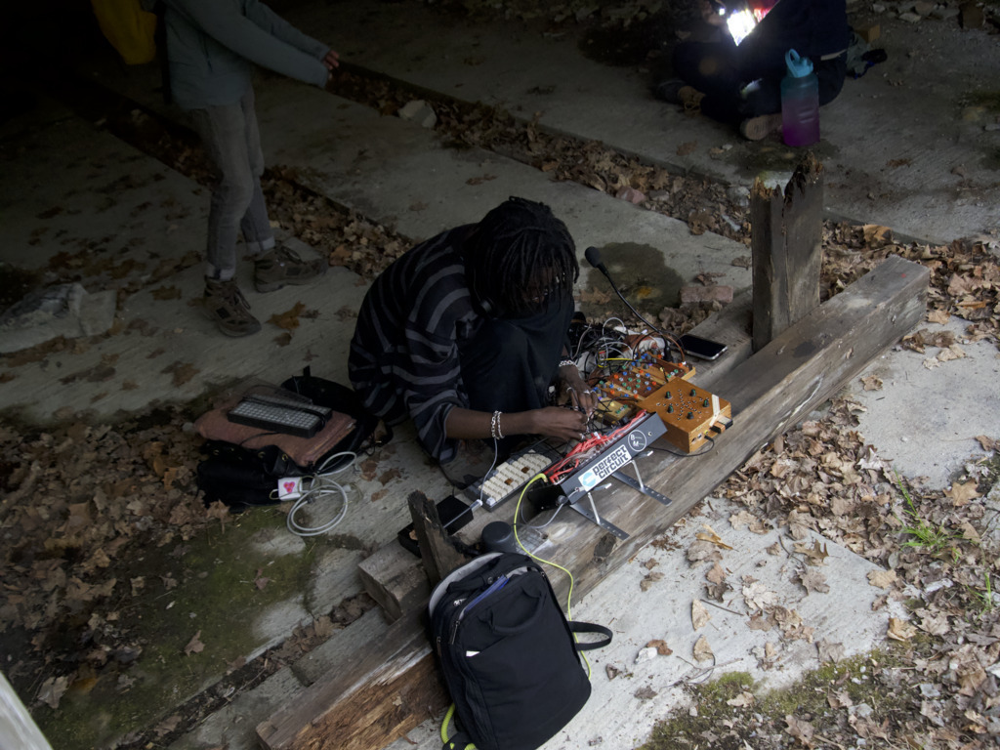

Algotrek

SAT 22 April 2023; Cold Spring, NY; Bull Hill.
A celebration for our Mother Earth, in the form of a low-impact walk, and performance.
2 miles from the Cold Spring Hudson Line station, near the Cornish Estate Ruins.
Live coding spells will take place in the woods.
Special thanks to Mark Denardo for organizing a beautiful event








